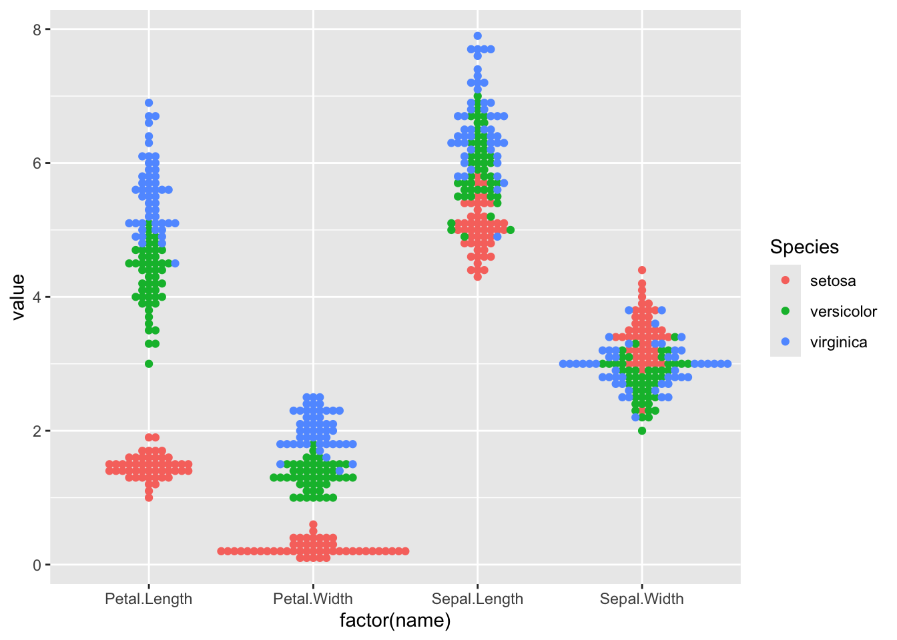

library(ggplot2)
library(tidyr)
library(ggbeeswarm)
ggplot(pivot_longer(iris, cols=1:4),
aes(x=factor(name), y=value, colour=Species)) + geom_beeswarm()
Add a folder called quizzes to your bst260 github repository.
Start a quarto document called nov9.qmd there.
Put your solutions to these problems in that document. Make sure it renders.
Problem 1. Consider
library(ggplot2)
library(tidyr)
library(ggbeeswarm)
ggplot(pivot_longer(iris, cols=1:4),
aes(x=factor(name), y=value, colour=Species)) + geom_beeswarm()
Find thresholds on values of Petal.Length that can be used to classify samples into species. For example, the vector cutsl here defines bins into which irises can be classified using Sepal.Length. We can then cross-classify the species labels and the three sepal-length based categories.
Species
setosa versicolor virginica
(0,5.4] 45 6 1
(5.4,6] 5 24 8
(6,8] 0 20 41Your job is to pick an iris feature and thresholds on length that reduce the numbers of off-diagonal elements of this table, which represents a “confusion matrix’.
Your answer will have the form
feature = "..."
cutsl = c(....)
with(iris, table(cut( ..., cutsl), Species))Problem 2.
This is a crude way of estimating proportion of births with low birth weight outcomes as it varies by mother’s body weight.
Call:
lm(formula = low ~ I(cut(lwt, seq(0, 300, 50))) - 1, data = birthwt)
Coefficients:
I(cut(lwt, seq(0, 300, 50)))(50,100] I(cut(lwt, seq(0, 300, 50)))(100,150]
0.458 0.318
I(cut(lwt, seq(0, 300, 50)))(150,200] I(cut(lwt, seq(0, 300, 50)))(200,250]
0.233 0.000 Fit a two parameter model with lm that provides an estimate of the proportion of births with low birth weight outcome for women with body weight 150.